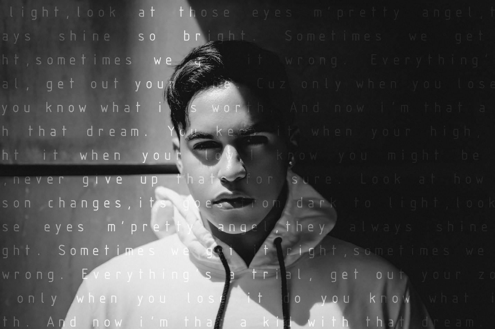

Article by Premila D'Sa Photos by Nick van Niekerk
Uploaded on August 25, 2016
The abandoned bridges of Rosedale don’t serve much of a purpose anymore – they’ve rusted away, forgotten for years under layers of graffiti. But for Ally Salama, a Cairo-born Toronto artist, this space is sacred – this is his “stage”.
Salama, a business student at Ted Rogers, comes here before every performance. It’s kind of a ritual – in isolation, Ally sings, projecting his voice to nothing but trees, getting ready for the night to come.
“It feels like a fake stage. You get to embody the song and embody the atmosphere before you perform it,” he said.
And Salama takes full advantage of the isolation – he plans out everything from how he delivers each lyric to where his eye contact is directed.
This is the kind of precise preparation Salama puts into every performance – and he performs at least every three months. His work ethic may have something to do with growing up as the child of a school teacher, or his experience as a professional swimmer.
But don’t be fooled by his academic methods – under the meticulous, calculated work lies Salama’s raw, genuine passion for music.
His connection to it ultimately comes from a troubled past.
Having constantly moved across continents when younger, Salama had to constantly endure the immigrant struggle while simultaneously dealing with the growing pains of adolescence. Every move meant leaving behind friends, family and a piece of his identity.
The only thing that was a constant for Ally through the years was music.
Growing up in Cairo, Salama says he always had music in the background. His mother introduced him to Middle Eastern pop singer Amr Diab when he was just a kid. Salama and his mother still go to Diab’s concerts together, even now as Salama pursues his own career.
He moved to Toronto alone at the age of 17 to attend Ryerson. He was drawn to Toronto after taking notice of the massive talents, like Drake and The Weeknd, coming out of the city. It’s their sound Salama aims to emulate in his own music – the urban “youthy pop vibe” as he describes it.
It’s interesting to note that while many musicians strive to differentiate their music style to stand out from the pop radio mass, Salama’s consciously trying the exact opposite. It’s through sticking with conventional pop, he believes, that he can reach a significant audience.
“I’m studying the elements of what makes a song catchy,” Salama says over the phone. He rustles around for a second and then finds it – The Craft of Lyric Writing, the book he’s studying.
But it took a while for Salama to get to the level of determination he’s at now - despite his ambitious plans, first year didn’t go as he planned.
“I was quite lonely [my first year] – I never went out with friends,” said Salama. “I knew I would get carried away with the city – people get carried away and forget why they came to Toronto.”
Salama says the year was rough on him, and he “lost himself.”
But just like he did when he was younger, once again Salama turned to music. However, this time it was his own.
So he slowly started singing, sometimes collaborating on covers with friends.
Salama was a determined learner, but struggled to improve by himself – that’s when he found and hired his vocal instructor, Ryan.
“I figured you have to let go of your ego and get as many people as possible to help you,” said Salama. “There’s no such thing as a one-man show.”
As of now Salama has two instructors – Ryan, his vocal coach, and Beau, his performance coach. He rents out his place on the room sharing app Air B’n’B to financially sustain his music career.
In addition to the money, it doesn’t hurt having the occasional stranger to perform for.
“This one guy really enjoyed it, he booked my place for three months,” Salama said.
Along with coaching, Ryan also lets Salama perform at a showcase he puts on every three months at The Rivoli, a little club tucked in on Queen St.
Salama’s first live performance was at the club - he remembers the specifics of the day, and it was a dark one.
“I was really intimidated, I was depressed, suicidal,” said Salama. “It took a lot of guts.”
He says he pushed through because his mother was visiting.
“I just wanted to make her proud.”
And simultaneously, while he made his mother proud, Salama also discovered the rush of performing.
It helped that the audience was supportive.
“It was the first time people gave me the heads up to believe in myself,” says Salama remembering the night. “I loved it.”
From then on Salama made it an obligation to perform as much as he could, which led him to Ryerson’s open mic nights.
“It really started me off,” says Salama about Ryerson’s music scene – it gave him the confidence to perform more, even lead him to busking at Yonge-Dundas square occasionally.
And now, he’s finally getting to work on his own EP.
Lyrically, Salama says his upcoming EP deals with “the struggles and heartbreaks of finding yourself.”
It’s based on his personal experiences. If it’s truly reflective of Salama, who is impressively honest about his experience with depression, it’s going to be an intimate and unapologetic, R’n’B styled experience.
An experience, Salama hopes, that others can identify with. And while it’s still in the works, Salama is sure of one thing.
“It’s not going to be that baby Justin Bieber album.”
Salama hopes to release the EP this upcoming year, and will be training under acclaimed vocal coach Dave Stroud next summer.
It would be easy to sleep on Salama – in the midst of Toronto’s emerging arts scene he may seem like another Drake wannabe. But it’s an acute sense of self-awareness and practicality that sets Ally Salama apart from the masses – and it’s exactly what might just make him Toronto’s next big thing.
Spotlight Editor in Chief
Kayla Douglas
Want to get your time under the lights? Are you a writer looking to join the Artist Spotlight initiative? E-mail us at music@ryerson.ca to see how!